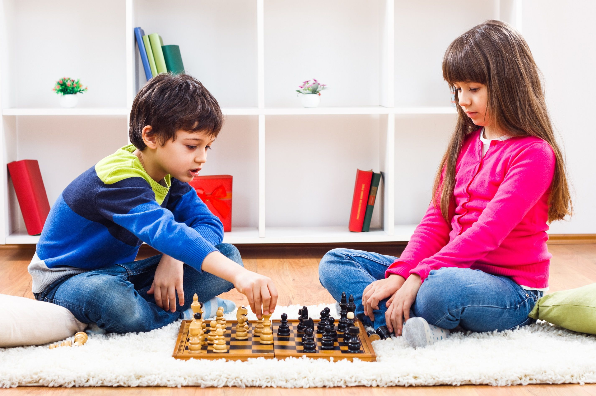
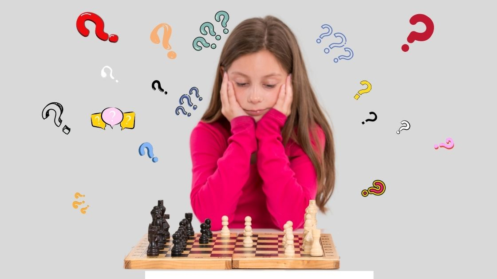
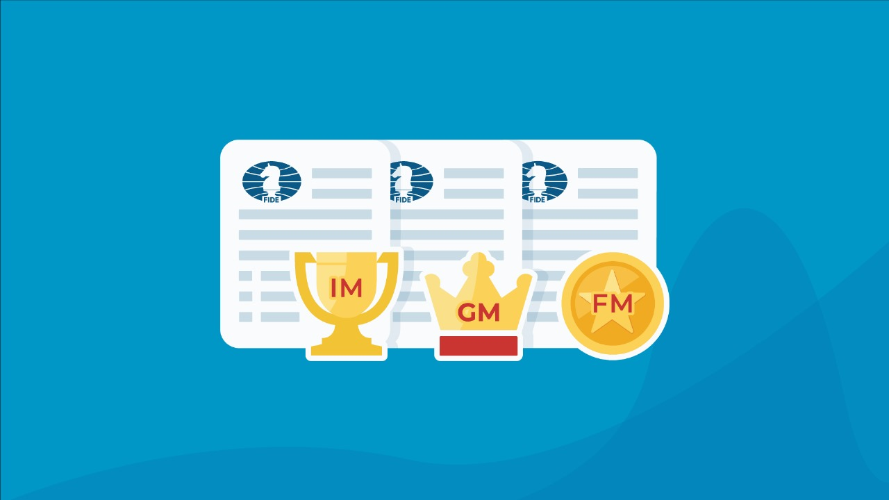
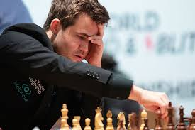
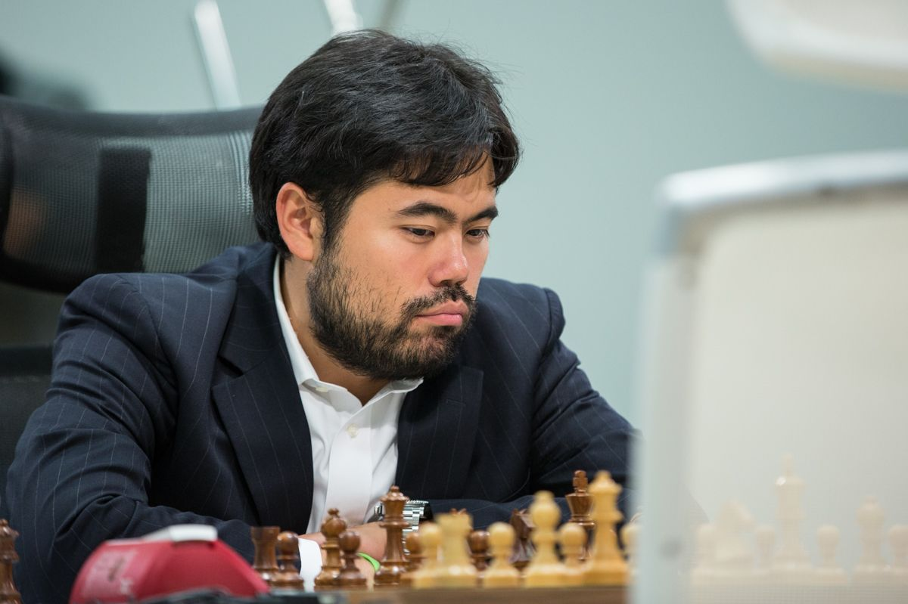
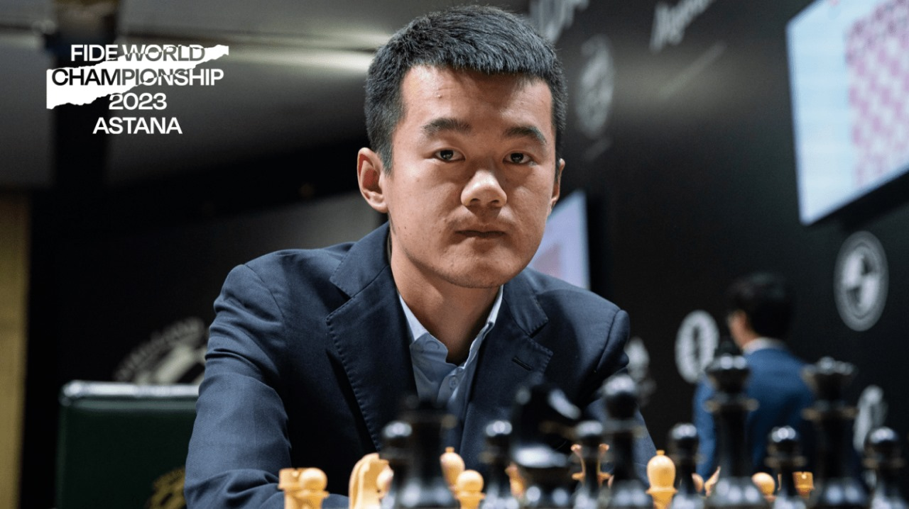
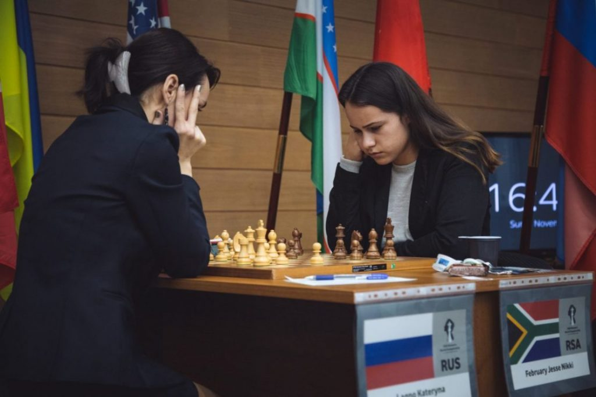
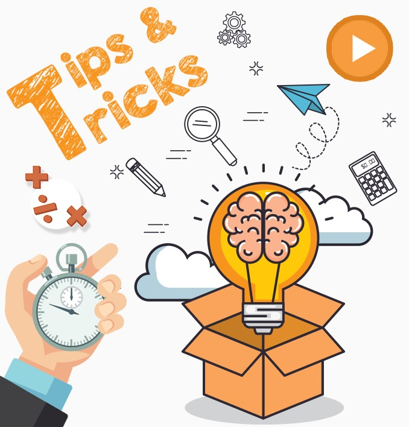

Now let's start knowing the benefits of chess!
Benefits of playing chess,and why we should play chess!
The scientific study included 10,318 participants whose median age was 73.8 years. It was
conducted over 10 years (from 2010 to 2020), and more than half of the study participants
were women. The analysis of study results was not completed until March 2023.The study found that playing chess reduces the risk of dementia lower than activities
considered beneficial by popular culture such as creative artistic activities (craftwork and
painting) and passive mental activities (reading books). So put down that book unless it is a
book related to chess.The researchers particularly noted that chess playing typically involve proactive engagement, critical thinking, logical reasoning, and social
interaction.This sport provides new skills for people in all ages spescially kids such as:memorization, imagination,responsibility,calm under pressure,problem solving,and etc...
Benefits of playing chess at a young age!
Click on the image for watching a video about benefits of playing chess at a young age

The growth of kids these days is unbelievably rapid, so much so that their skills can already be elite at such a young age.
Aside from developing cognitive skills, chess also develops children's social skills. A benefit for children of playing games with rules consists in developing social aspects, such as taking turns, learning fair play, self-respect and respect for others, understanding others' perspectives, and developing empathy.
3 benefits for playing chess for all ages (6-80years)
1) Chess Develops Logic, Critical Thinking, and Creativity
Chess exercises both sides of the brain.
The game of chess requires a lot of “if this, then-that” scenarios, requiring players to imagine all the potential moves, alternatives and outcomes of each possibility.
One study, conducted by Robert Ferguson, executive director of the American Chess School in Pennsylvania found that kids who had been playing chess versus computer games scored 13 percentage points higher in critical thinking and 35 percentage points higher in creative thinking.
2) Chess Increases Concentration & Memory
Studies have shown that children who play chess regularly significantly improve their visual memory and concentration. A fantastic aspect of chess is that the game rewards you for concentration and penalizes you for losing it. Lose focus and you lose a piece, or worse, the game! Maintain focus and you're likely to win! This aspect of the game of chess gives a child's brain a fun incentive to stay focused while playing!
3) Chess Develops Problem Solving Skills
The game of chess is a game of problem-solving, planning, and foresight. Being able to think through changing variables and formulate a plan based on various possibilities are invaluable skills necessary for the game, and more importantly, for life!

click on the video for starting your chess way
Chess FIDE titles

In chess, the word FIDE means "International Chess Federation".
There are alot of FIDE titles such as:
1)Grandmaster(Women),it is the highest title in chess.
2)International master(Women),it is the title or the step before the Grandmaster title.
3)Fide master(Women),it is the title before the International master title.
4)Candidate master(Women),it is the first title in chess.
To gain any of these titles you should have a special rating . A rating is like your level , for example:if your rating is 1800point[Female] or 1900[male] so, you will be a candidate master.And you gain these points when you win a player with a higher rating and every new month your rating increses if you win and decreases if you lose.
Who are the famous players in the world?

The world champion is "Magnus Carlsen", Norwegian chess grandmaster,
he has been the world champion since 2016.

"Hikaru Nakamura", American chess grandmaster,he is the most rich chess player in the world , he is from the best players in world.

"Ding Liren",Chinese chess grandmaster from the top chess players and has been the world champion 1 time.
Famous African women chess players

Shahenda Wafa,Egyptian chess women garndmaster,she is the African champion women section.

Jesse February,SouthAfrican chess women international master,she has been the african champion.
Some chess plans and tricks for beginners to win their games!

1)Napoleon trick:https://youtu.be/NWLjvKuQhaE?si=wWLsgxgeqF5FNdPc
2)Win the game in 4 moves!?https://youtube.com/shorts/u5WwDn9peu4?si=QRyk5pfVweBwfJjw
3)Budapest trap:https://youtube.com/shorts/-SGMZEftNf0?si=YPla_TR3vsV45KtZ